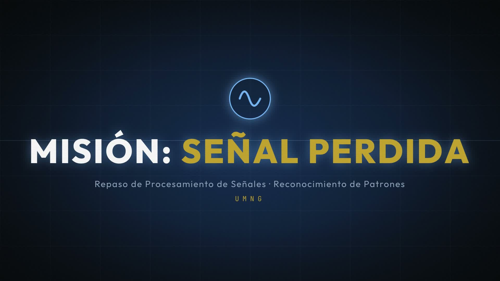
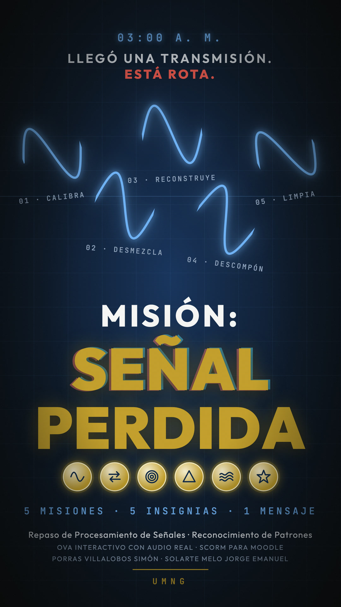
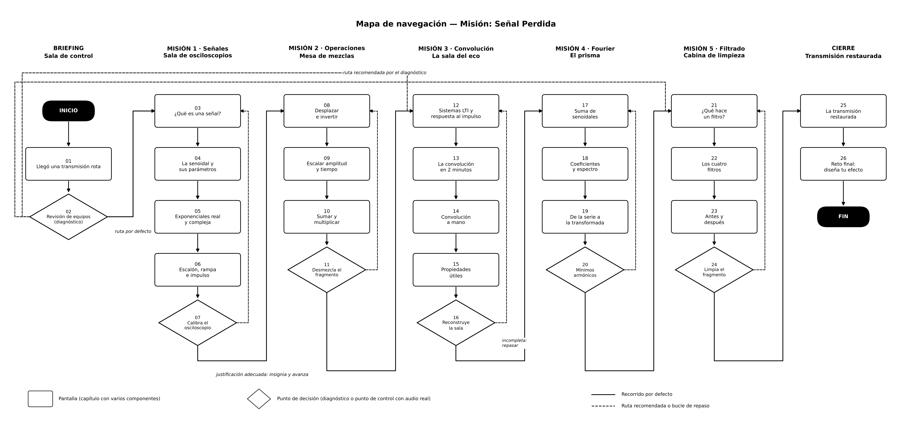
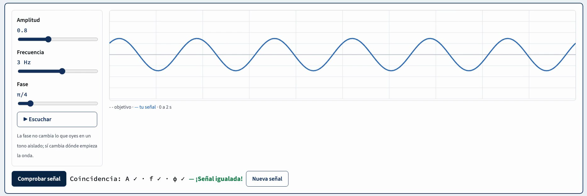
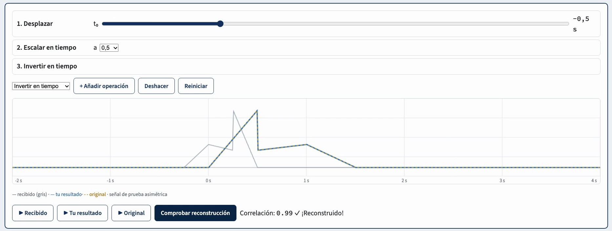
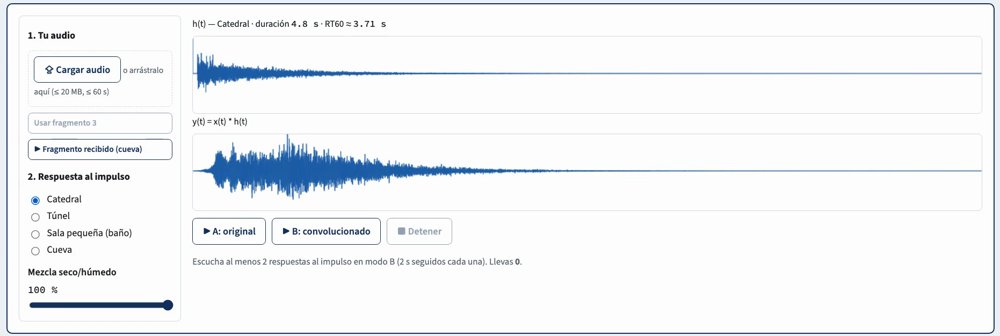
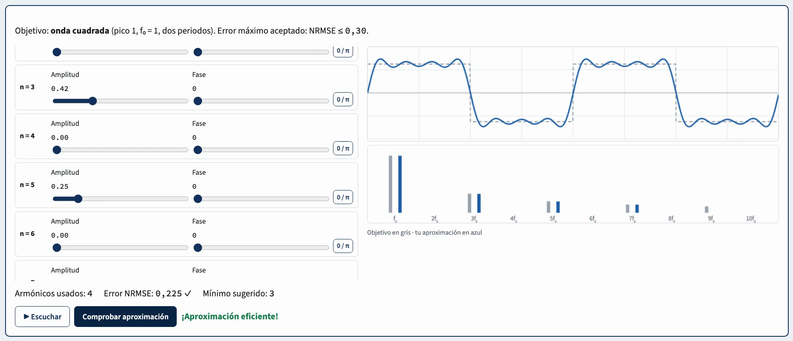
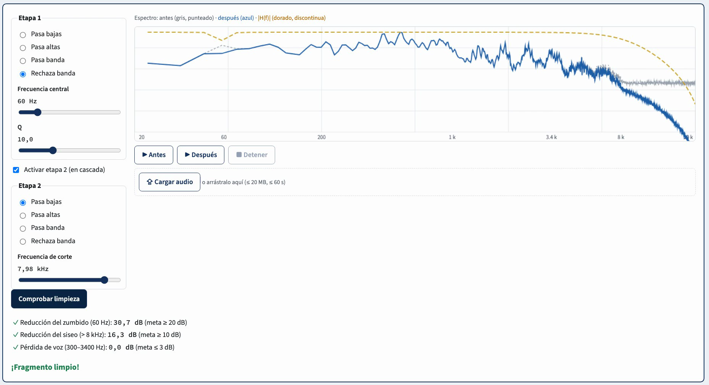
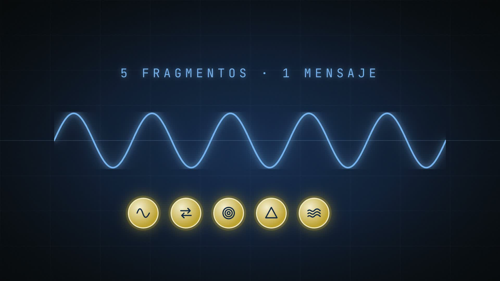

03:00 A. M. · LLEGÓ UNA TRANSMISIÓN · ESTÁ ROTA
OVA gamificado de repaso de Procesamiento de Señales
Reconocimiento de Patrones · Multimedia Educativa · UMNG
Porras Villalobos Simón
Solarte Melo Jorge Emanuel
01 · NECESIDAD EDUCATIVA
EL PROBLEMA
Ya aprobaron la electiva de Procesamiento de Señales, pero no recuerdan ni aplican con fluidez señales básicas, operaciones, convolución, Fourier y filtrado.
EL COSTO
La docente debe invertir tiempo de clase en retomar lo que ya debería estar consolidado, y el curso avanza más lento.
EL PEDIDO
Un material dinámico para una sesión de repaso de 3 horas: cargar un audio y convolucionarlo con salas, y filtrarlo moviendo la frecuencia de corte.
01 · NECESIDAD EDUCATIVA · POBLACIÓN Y CONTEXTO
19–24
años; pregrado en Ingeniería en Multimedia, UMNG, matriculados en Reconocimiento de Patrones.
3 h
una sesión presencial de repaso, en aula con computador, audífonos e internet.
Alta
familiaridad con videojuegos y multimedia; prefieren lo visual y práctico a la lectura extensa.
BARRERAS → CÓMO LAS ATENDEMOS
Ansiedad matemática → ver y escuchar antes de calcular · Olvido → una pantalla por concepto · Niveles distintos → diagnóstico con ruta personalizada
01 · NECESIDAD EDUCATIVA · ESTADO DEL ARTE
| Recurso | Audio propio | Guía conceptual | Evaluación | En Moodle | Gamificación |
|---|---|---|---|---|---|
| PhET · Fourier: Making Waves | No | Parcial | No | No | Parcial |
| Seeing Circles, Sines, and Signals | No | Sí | No | No | No |
| Falstad · Fourier Series Applet | No | No | No | No | No |
| OpenAIR (respuestas al impulso) | No | No | No | No | No |
| MathWorks · Signal Processing Onramp | No | Sí | Sí | No | Parcial |
| MIT Mathlets | No | Parcial | No | No | No |
| Misión: Señal Perdida | Sí | Sí | Sí | Sí | Sí |

02 · PROPUESTA DE SOLUCIÓN
El estudiante es un ingeniero en multimedia experto en sonido en prácticas. Cada misión repara una capa del daño manipulando audio real, y al superarla gana una insignia y un fragmento del mensaje.
M1 Sala de osciloscopios · señales
M2 Mesa de mezclas · operaciones
M3 La sala del eco · convolución
M4 El prisma · Fourier
M5 Cabina de limpieza · filtrado
02 · PROPUESTA DE SOLUCIÓN · IMPACTOS ESPERADOS
EN EL AULA
Menos horas retomando la electiva; más tiempo para los contenidos propios de Reconocimiento de Patrones.
EN EL APRENDIZAJE
Escuchar y ver el efecto de convolucionar y filtrar; llegar a justificar decisiones y crear un efecto propio.
PEDAGÓGICO Y TECNOLÓGICO
Repaso gamificado alineado con Bloom y un banco de actividades H5P reutilizable en futuras cohortes.
AUTONOMÍA
Antes, durante o después de clase, para repasar a su ritmo los temas que más les cuestan.
03 · META INSTRUCCIONAL
Al finalizar la sesión, el estudiante reconoce las señales básicas, aplica operaciones, convolución y Fourier, y selecciona y justifica un filtro para limpiar audio real, integrándolo todo en un efecto sonoro propio.
Diagnóstico
Recordar
Repaso
Comprender
Práctica
Aplicar
OA1 · OA2 · OA4
Analizar
OA3 · OA5
Evaluar
OA6
Crear
03 · META INSTRUCCIONAL · ENFOQUE PEDAGÓGICO
1 · EXPERIENCIA CONCRETA
Escuchar el fragmento dañado de la transmisión.
2 · OBSERVACIÓN REFLEXIVA
Comparar el antes y el después: ver y oír qué cambió.
4 · EXPERIMENTACIÓN ACTIVA
Manipular audio real en el módulo del punto de control.
3 · CONCEPTUALIZACIÓN
Explicación breve del tema, una idea por pantalla.
TAMBIÉN NOS APOYAMOS EN
Cognitivismo: el significado se recuerda manipulando y verificando.
Gamificación: narrativa, misiones e insignias.
Diseño instruccional: ADDIE
04 · CONTENIDOS · ESTRUCTURA TEMÁTICA
Briefing · Sala de control
15 min
Narrativa, plano y diagnóstico · 01–02
M1 · Sala de osciloscopios
25 min
Señales básicas · 03–07
M2 · Mesa de mezclas
25 min
Operaciones · 08–11
M3 · La sala del eco
35 min
Convolución · 12–16
M4 · El prisma
30 min
Fourier · 17–20
M5 · Cabina de limpieza
30 min
Filtrado · 21–24
Cierre · Transmisión restaurada
20 min
Repaso, síntesis y efecto propio · 25–26
04 · CONTENIDOS · SECUENCIA Y NAVEGACIÓN

Cada pantalla: introducción → exploración → práctica → comprobación → cierre.
Diagnóstico (02): recomienda empezar en la pantalla 03, 12 o 21.
Punto de control: si la justificación es incompleta, vuelve a la primera pantalla de la misión.
05 · HERRAMIENTAS · H5P
EXPLORAR
Image Hotspots · Accordion · Agamotto · Image Slider · Dialog Cards
PRACTICAR
Drag and Drop · Drag the Words · Fill in the Blanks · Mark the Words
COMPROBAR
True/False · Multiple Choice · Single Choice Set · Image Choice · Find the Hotspot · Interactive Video
SINTETIZAR Y CREAR
Summary · Essay · Documentation Tool
Todo vive en un H5P Interactive Book de 26 capítulos, con Text, Image, Audio, Table e IFrame Embed: 23 tipos en total. ¿Por qué H5P? Retroalimentación inmediata por opción, puntaje que Moodle registra y contenido reutilizable.
05 · HERRAMIENTAS · LO QUE H5P NO PUEDE HACER

M1 · Generador: iguala A, f y φ

M2 · Sandbox: deshace x(−2(t − 0,5))

M3 · Convolución: tu audio en 4 salas

M4 · Series: mínimos armónicos

M5 · Filtrado: dos etapas, espectro en vivo
M6 · ESTUDIO INTEGRADOR
Combina respuesta al impulso y filtros, y exporta tu efecto en .wav.
05 · HERRAMIENTAS COMPLEMENTARIAS
61
Ilustraciones y gráficas en Python con Matplotlib, con el estilo del OVA; los espacios acústicos dibujados como vectores.
4
Respuestas al impulso sintetizadas con NumPy y SciPy, cada RT60 verificado dentro de ±15 %; voz con espeak-ng.
Plataforma: SvelteKit · Web Audio API · Canvas · h5p-standalone · SCORM 1.2 · Moodle · GitHub Pages · Vitest y Playwright para las pruebas
06 · PRODUCTO FINAL · INTERACTIVIDAD
PREDICE ANTES DE MEZCLAR
En la Misión 2 el sandbox se abre solo después de predecir cómo deshacer el daño; luego se comprueba con audio.
ESCUCHA A / B
Original y procesado sobre la misma reproducción: el cambio conserva la posición, para comparar de oído al instante.
TU PROPIO AUDIO
Carga un WAV o MP3 de hasta 60 s y convoluciónalo o fíltralo. Nunca sale del navegador.
RETROALIMENTACIÓN Y REINTENTO
Explicación por opción en cada actividad; en los puntos de control, retroalimentación por criterio y un bucle de repaso.
06 · PRODUCTO FINAL · GAMIFICACIÓN
Cada punto de control superado desbloquea una insignia y un fragmento del mensaje. Al reunir los cinco, se escucha la transmisión completa.
Domador de Ondas · Maestro de la Mezcla · Arquitecto del Eco · Cazador de Armónicos · Guardián del Filtro → Ingeniero en Multimedia experto en sonido
06 · PRODUCTO FINAL · USABILIDAD Y ACCESIBILIDAD
NAVEGACIÓN
Índice lateral libre, progreso visible y botones anterior y siguiente en cada capítulo.
TECLADO
Todos los controles se usan con teclado, con foco visible y descripción hablada de cada gráfica.
CONTRASTE
Texto con contraste de al menos 4,5:1; antes y después se distinguen también por el trazo, no solo por el color.
AUDIO ACCESIBLE
Transcripción «Ver texto» en cada audio y video con subtítulos.
CUIDADO AUDITIVO
Limitador con pico de −1 dBFS, volumen inicial al 70 % y aviso para usar audífonos.
SIN SORPRESAS
Nada suena solo, se respeta la reducción de movimiento y funciona desde 1366 × 768.

TRANSMISIÓN RESTAURADA
Libro H5P de 26 capítulos con 51 actividades
Seis módulos de audio en vivo
Tráiler de 45 s y póster de campaña
Curso en Moodle con rúbrica e insignia
leunameek.github.io/mision-senal-perdida
¿Preguntas?